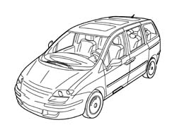
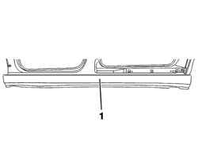
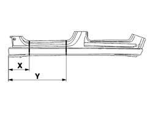
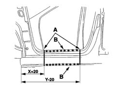
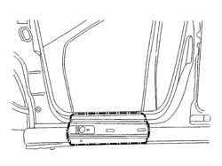
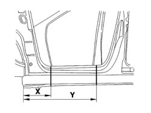
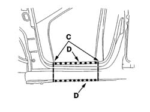
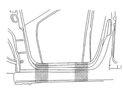
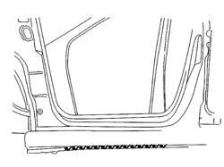

7210E45 PARTIAL DOOR SILL RAIL OUTER TRIM
- Path
- Procedures > 72 PANELS AND FRAME > 7210 REMOVING REFITTING > 7210E EXTERNAL PARTS > 7210E45 PARTIAL DOOR SILL RAIL OUTER TRIM
- Kind
- repair procedure (removal / refitting; the operation number is the code)
- Applies to
- all engines; all production periods
- Interactive page
- https://sloeber94.github.io/elrnDB-fUlss/en/#/179007974
Applies to: all engines; all production periods
Applies to: all engines; all production periods
 Removing
Removing
 Refitting
Refitting- Work on the component highlighted previously making sure that the equipment illustrated is available:

Applies to: all engines; all production periods
1. Assembled outer side member

Applies to: all engines; all production periods
- Check that the components connected are not distorted by checking the bodyshell alignment measurements using suitable equipment (gauges, templates or jigs).
- Make the cuts illustrated in the diagram using a 1 grinder.

Applies to: all engines; all production periods
- Make the cuts illustrated in the diagram using a 1 grinder.
- Reduce the spot welds indicated (B) using a chamfering machine.
- Cut the element using a chisel and remove it.

Applies to: all engines; all production periods
- Prepare the edges to be welded and protect them using thermoweldable primer.

Applies to: all engines; all production periods
Refitting
Removing- Position the outer side member and fasten using self-locking clamps then, after having checked that the alignment and clearances are correct, trace the definitive cuts, remove the side member and proceed as described below.
- Make the final cuts on the side member
- Prepare the edges to be welded and protect them using thermoweldable primer.
- Fit the side member cut previously and the front door, then check the clearances.
- Remove the front door.

Applies to: all engines; all production periods
- Proceed with MIG welding (C), then use a spot welder as illustrated in the diagram (D) and then grind the weld beads using a disc grinder.

Applies to: all engines; all production periods
- Finish off by surfacing the area illustrated in the diagram.

Applies to: all engines; all production periods
- Apply finishing compound using a brush starting from the bottom of the vehicle.

Applies to: all engines; all production periods
- Check that the welded component is correctly positioned.
- Apply electro-galvanizing paint to the ground parts.
- Proceed with waxing the box sections.